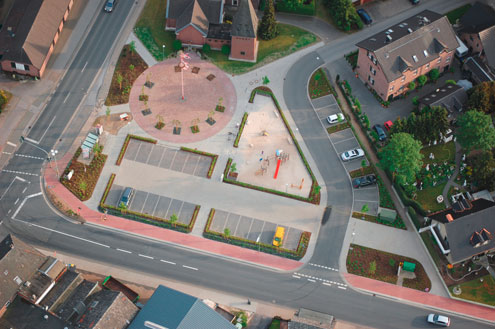
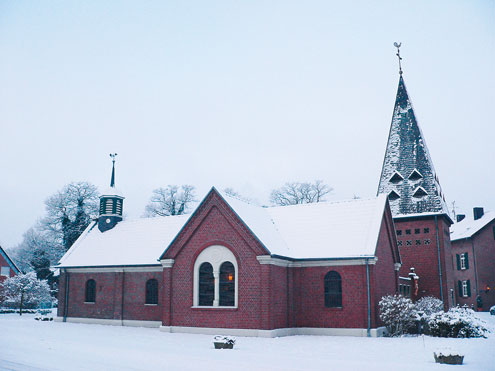
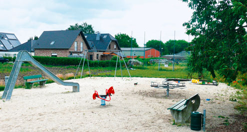

Dorf

Wissenswertes
Der Name Lüllingen ist schon sehr alt und taucht schon 1418 in den Geschichtsbüchern auf. Bereits 1510 wird die Kapelle "tho lueylyeng" erwähnt. Die Schreibweise war damals lueylyeng, lulyng und lullingh. Pastor Gaien schrieb 1636 schon Lülling. Später hängte man die Silbe "en" an: Lüllingen.
Im Jahre 1636 und 1714 werden bereits Schulmeister in Lüllingen genannt. Auch sollen Eremiten an der Lüllinger Schule tätig gewesen sein. Von ihnen jedenfalls, die das Kapellchen am Jülicherweg schon betreuten, erhielt Lüllingen den Namen "An de Kluus", der heute nach wie vor volkstümlich ist.
Im Jahre 1843 zählte die Bauernschaft Lüllingen 154 Einwohner. Zum dortigem Schulbezirk gehörten auch die Bauernschaften Geniel und Spitzfeld.Die ältesten Höfe im Lüllinger Gebiet werden bereits um das Jahr 1418 genannt, so die heute noch bekannten Höfe mit den typischen Namen wie Thusen, Tümpen, Böns, Holtappel, Dicker und Eimels.
weiterlesen

Kirchliches
1510 wird eine Kapelle "to Luelyng" in einer alten Steuerliste erwähnt. Sie soll am Jülicherweg gestanden haben. Ein Sandstein über der Eingangstür der Lüllinger Kapelle zeigt die Jahreszahl 1747.
Die Kapelle wurde erbaut mit einem Tonnengewölbe, Satteldach und einem kleinen Turm. Im kleinen Glockenturm hängt eine kleine Glocke aus dem Jahre 1664, also 83 Jahre älter als die Kapelle. Ob die Glocke schon in der Kapelle am Jülicherweg geläutet hat? Der Kirchenbau hatte bis 1921 eine Länge von 10 m und eine Breite von 6,40m.
Für die Lüllinger wurde die Kapelle zu klein. Es ist anzumerken, dass in der 400 Seelen-Gemeinde von Lüllingen erst seit 1919 regelmäßig ein Sonntagsgottesdienst gefeiert wurde. Der Kirchenbauverein entschloß sich 1921 zu einer Vergrößerung der Kapelle. Ein Querhaus, der Chorraum und die Sakristei, von 6,30 x 11,50 m wurden angebaut.
weiterlesen

Leben in Lüllingen
Auf Wunsch der Nachbarschaft Kerstenweg wurde im März 2010 von ihr und dem Natur- und Heimatverein ein Spielplatz errichtet. Die Familie Bongartz stellte dankenswerterweise ein Grundstück kostenlos auf unbestimmte Zeit zur Verfügung.
Die Spielgeräte des alten Spielplatzes, die sonst verschrottet würden, wurden wieder aufgestellt. Ein Bolzplatz wurde eingesät, ein Fangnetz errichtet. Ein Tipi aus Weiden gepflanzt.
Melanie Gehrmann und Christof Weleda erklärten sich in der Gründungsversammlung bereit, als Obleute zu fungieren und auf den Platz aufzupassen. Heute wird der Platz von den Kindern des Neubaugebietes gut angenommen.
weiterlesen